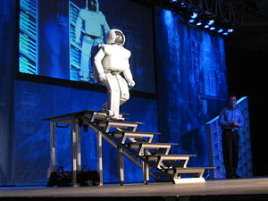

The artificial intelligence
Artificial Intelligence : it's a certain behavior and characteristics, possessed by computer programs, that make them mimic human mental abilities and patterns.

Chatbots use artificial intelligence to understand customer problems faster and provide more efficient answers
AI uses it to analyze critical information from a large set of text data to improve scheduling
Recommendation engines can provide automated recommendations for TV shows based on users' viewing habits
the artificial intelligence "however" was been a serious field we can do researches about but it has a history of experiments and acheivements
In the mid-20th century, a few scientists began exploring a new approach to building intelligent machines, based on recent discoveries in neuroscience, a new mathematical theory of information, the development of cybernetics, and above all, by the invention of the digital computer, a machine that could simulate The human computational thinking process.
He established the modern field of AI research at a conference on the campus of Dartmouth College in the summer of 1956. These attendees became leaders in AI research for several decades, notably John McCarthy and Marvin Minsky, Allen Noel and Herbert Simon who established AI laboratories at MIT and the University of Carnegie Mellon (CMU) and Stanford, they and their students wrote programs that surprised most people. The computer was solving algebra problems, proving logical theorems, and speaking English. By the mid-1960s this research was being generously funded by the US Department of Defense. These researchers made the following predictions:
1965, e. a. Simon: "In twenty years, machines will be able to do whatever work a man can do."
1967, Marvin Minsky: "Within a generation...the problem of creating 'artificial intelligence' will be largely solved."
But they failed to realize the difficulty of some of the problems they faced. In 1974, in response to criticism from England's Sir James Lightttle and persistent pressure from Congress to fund more productive projects, the US and British governments cut funding for all undirected exploratory research in AI, the first setback for AI research.
In the early 1980s, AI research experienced a new revival through the commercial success of "expert systems", an AI program that simulates the knowledge and analytical skills of one or more human experts. By 1985, AI research profits in the marketplace had reached more than $1 billion, and governments began funding again. A few years later, starting with the collapse of the Lisp Machine market in 1987, AI research experienced another but longer setback.
In the 1990s and early 2000s, AI achieved even greater successes, albeit somewhat behind the scenes. AI is used in logistics, data mining, medical diagnostics and many other areas across the technology industry. This success is due to several factors: the great power of computers today (see Moore's Law), the increased focus on solving specific sub-problems, the creation of new relationships between the field of artificial intelligence and other areas of work on similar problems, and, above all, researchers have begun to adhere to strong mathematical approaches. and strict scientific standards.
In the twenty-first century, AI research has become so highly specialized and technical, that it has broken into so deeply independent sub-fields that they are few among them. Divisions of the field have grown around particular institutions, researchers have worked to solve specific problems, long-standing differences of opinion about how AI should work, and different tools are widely applied.

 ">
">
Traditional symbolic artificial intelligence
When digital computers became possible in the mid-1950s, artificial intelligence research began to explore the possibility of human intelligence being reduced to symbol control. The research center of the three institutions: CMU, Stanford and the Massachusetts Institute of Technology, each developed its own method of research. John Haugeland called these approaches to AI "good old fashioned AI," or " GOFAI ."
Knowledge simulation
Economists Herbert Simon and Alan Noel studied human skills and tried to formalize them. With these works, they laid the foundation for the science of artificial intelligence, as well as cognitive science, operations research and management science. Their research team conducted psychological experiments to show the similarities between human problem-solving skills and the skills of the software they were designing (such as a "general problem solver"). This tradition, centered at Carnegie Mellon University, was eventually destined to lead to the development of the Soar (a symbolic cognitive structure) in the mid-1980s.
Logical artificial intelligence
Unlike Noel and Simon , John McCarthy felt that machines did not need to simulate human thought, but rather try to find the essence of abstract logic and solve problems, regardless of whether people were in the same algorithms. His official Stanford Laboratory (SAIL) focused on using logic to solve a wide range of problems, including knowledge representation , planning and education. Logic was also a focus of work at the University of Edinburgh and elsewhere in Europe that led to the development of a programming language called Prolog and the science of logic programming.
Symbolic AI "disorderly"
MIT researchers (such as Marvin Minsky and Seymour Papert) found that solving difficult problems in vision and natural language processing required special solutions—they argued that no simple general principle (such as logic) would capture all aspects of intelligent behavior. Roger Shank described their "anti-logic" approaches as "unsystematic" (as opposed to the "regular" models at CMU and Stanford). Boolean knowledge bases (eg Doug Lynate's Cyc project) are an example of "disorderly" AI, because they must be designed by hand; One complex concept after another.
Knowledge-based artificial intelligence
When memory for large computers became available around the 1970's, researchers from all three of these traditions began building knowledge into AI applications. This "knowledge revolution" led to the development and dissemination of expert systems (presented by Edward Feigenbaum, the first truly successful form of artificial intelligence software. The knowledge revolution was also driven by the realization that vast amounts of knowledge would be required for many simple applications. for artificial intelligence.
Semi-symbolic artificial intelligence
During the 1960s, symbolic approaches had great success in simulating higher-level thinking in small representative programs. Curricula based on cybernetics or neural network have been abandoned or pushed into the background. In the 1980s, though, progress in symbolic artificial intelligence stalled, and many believed that symbolic systems would not be able to simulate all processes of human cognition, particularly perception, robotics, learning and pattern recognition. A number of researchers have begun looking at "semi-symbolic" approaches to specific problems in artificial intelligence.
Statistical artificial intelligence
In the 1990s, AI researchers developed complex mathematical tools to solve specific sub-problems. These tools are truly scientific, in the sense that their results are both quantifiable and verifiable, and have been responsible for many of the recent successes of AI research. This common mathematical language also allows for a high level of collaboration with more fields (such as mathematics, economics, or operations research). Russell Stewart and Peter Norvig described this movement as nothing less than a "revolution" and a "victory for the regulars".
Curriculum integration
Intelligent Worker Model
An intelligent worker is a system that understands its environment and takes positions that increase its chance of success. Intelligent agents in their simplest form are programs to solve specific problems. The most complex of them is the thinking and rational human being. This model gives researchers a license to study individual problems and find solutions that can be both validated and utilized, without agreeing on a single approach. An agent can use any approach that works to solve a specific problem—some agents are symbolic and logical, some are semi-symbolic neural networks, and others can use new approaches. The model also provides researchers with a common language to communicate with other fields, such as decision theory and economics, which also use concepts of abstract factors. The intelligent worker model became widely accepted during the 1990
.jpg)